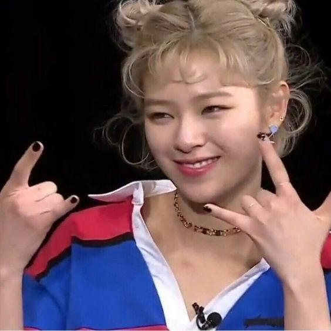

TWICE 트와이스 is a South Korean girl group formed by JYP Entertainment. TWICE was formed under the television program Sixteen and debuted on October 20, 2015, with the extended play The Story Begins.
"The group will touch people's hearts twice, once through the ears, and once again through the eyes."
– Park Jin Young
Discography:
- The Story Begins
- Page Two
- TWICEcoaster: Lane 1
- TWICEcoaster: Lane 2
- What’s TWICE?
- Signal
- #TWICE
- One More Time
- Twicetagram
- Merry & Happy
- Candy Pop
- What is Love?
- Wake Me Up
- I Want You Back
- Summer Nights
- BDZ
- Stay By My Side
- YES or YES
- The Year of “YES”
- #TWICE2
- Fancy You
- Happy Happy
- Breakthrough
- Feel Special
- &TWICE
- More & More
- #TWICE3
- Eyes Wide Open
- BETTER
- Cry For Me
- Kura Kura
- Taste of Love
- Perfect World
- The Feels
- Formula of Love: O+T=<3
- Doughnut
- Just Be Yourself
- Celebrate
- Between 1&2
- Moonlight Sunrise
- READY TO BE
- Hare Hare
- Dance Again
- I GOT YOU
the members
park jihyo

- leader, main vocalist
- born feb 1, 1997
- nickname aka god jihyo
im nayeon

- lead vocalist, lead dancer, center, fotg
- born sept 22, 1995
- my bias<3
yoo jeongyeon
- lead vocalist
- born nov 1, 1996
- qt n silly
hirai momo
- main dancer, sub vocalist, sub rapper
- born nov 9, 1996
- dancing machine
minatozaki sana
- sub vocalist
- born dec 29, 1996
- miss shy shy shy
myoui mina

- main dancer, sub vocalist
- born mar 24, 1997
- aka sharon
kim dahyun
- lead rapper, sub vocalist
- born may 28, 1998
- dubu
son chaeyoung

- main rapper, sub vocalist
- born apr 23, 1999
- all-rounder
chou tzuyu
- lead dancer, sub vocalist, visual, maknae
- born jun 14, 1999
- literally shy shy shy